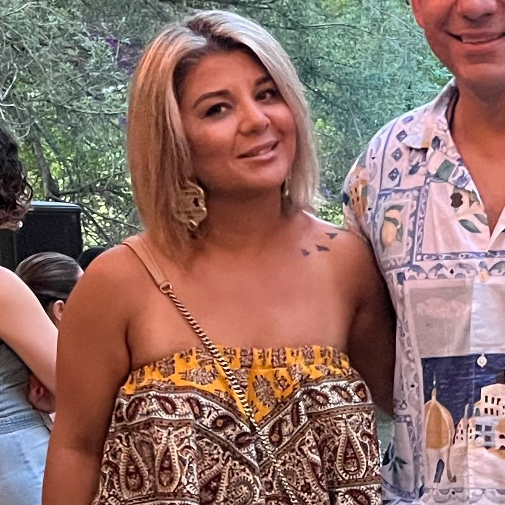

A journey through abstraction and form, exploring identity, spirituality, and cultural heritage through mindful expression.

Ronak Bahador is an abstract figurative artist whose work explores the intersections of identity, spirituality, and cultural heritage. Through a unique blend of minimalism and expression, Ronak's paintings invite viewers to reflect on the relationship between physical form and inner experience.
Drawing from a rich cultural background, Ronak's work often features elements of calligraphy, gold leaf, and symbolic color palettes that speak to both personal and universal themes, creating a visual language that bridges tradition and contemporary expression.
Read More